CSGO RushB中文网
CSGO RushB中文网
本文将为玩家普及CSGO收藏品——各类勋章、胸章、硬币、挑战币、奖牌和徽章（以下均统称为徽章）介绍，以及获得方法。V社每年都会推出不同的徽章，包括大行动、Major大赛以及地图创作奖励等。除了系列徽章，大部分徽章均无法交易，需要玩家参与活动完成指定条件才能获得。
这些徽章具有收藏和纪念意义，会显示在个人资料卡或记分板等位置，象征玩家的游戏历程。
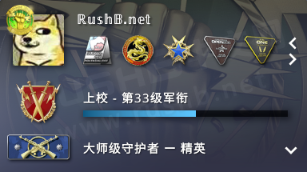
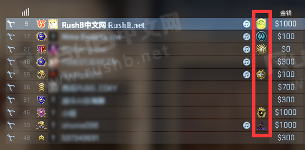
老兵硬币
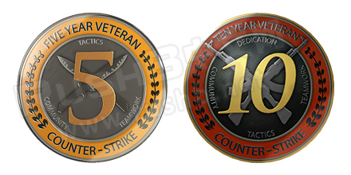左：5年老兵硬币 右：10年老兵硬币
5年老兵硬币和10年老兵硬币是提供给老玩家的纪念硬币，表示玩家已在《反恐精英》社区服役5/10年。
获得方法/条件：
账号拥有且玩过反恐精英任意系列游戏满足5/10年，并且信誉良好（无封禁记录）。如果想要知道自己的第一款反恐精英游戏购买时间，请查看这里。
忠诚徽章
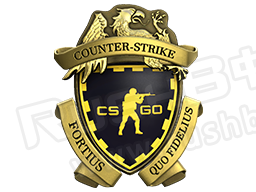忠诚徽章
忠诚徽章随CSGO免费提供给2018年12月之前的玩家，旨在纪念《头号特训》更新前玩家已在反恐精英社区拥有的忠实会员资格。忠诚的力量。
获得方法/条件：
无，新玩家无法获得。
大行动挑战币
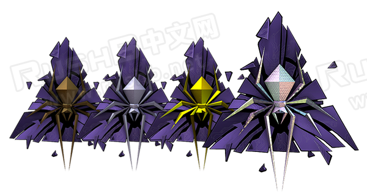裂网大行动挑战币（铜、银、金、钻石）
至今为止CSGO一共推出了9个大行动，让玩家可以体验游戏额外内容，包括新地图、皮肤奖励以及挑战币收藏，其中，挑战币还能通过完成大行动任务依次从铜币升级到银币、金币、钻石币。
更多大行动币图片以及介绍请看这里。
在库存界面，大行动挑战币会显示玩家完成的任务数以及参与时间，在九头蛇之前的大行动，挑战币会还会记录玩家在活动期间的官匹表现。
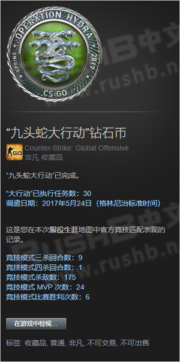
获得方法/条件：
在大行动活动期间购买通行证并激活，玩家便可获得大行动挑战币（铜币），铜币可通过完成指定任务数量进一步升级成银币、金币以及钻石币。
大行动结束后的通行证仍可以激活获得铜币，但无法升级，因为活动已经结束无法参与任务，
收藏胸章
收藏胸章胶囊是V社让有钱的玩家能够更方便收集而推出的商品。可从中随机开出一款胸章，类似开箱，胶囊分别有系列1、系列2、系列3收藏胸章胶囊以及《半衰期：爱莉克斯》收藏胸章胶囊。
系列1、系列2、系列3收藏胸章胶囊可直接在游戏里购买，或者在Steam社区市场或第三方平台购买徽章。
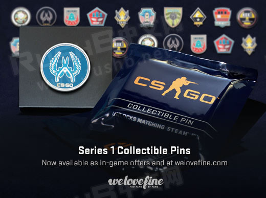实体系列1收藏胸章胶囊及其胸章
另外系列收藏胸章胶囊有实体商品，玩家可以在Major大赛现场或是V社商店、国服军需商店（不一定有货）购买，实体胶囊除了开出来的实体胸章，还附带CDkey激活码，可在Steam客户端激活额外获得一枚“纯正”胸章进入CSGO库存，纯正胸章除了名称有纯正两字和颜色是绿色的，其他外观和普通版一致，不过激活后的纯正胸章无法交易出售，普通版可以。
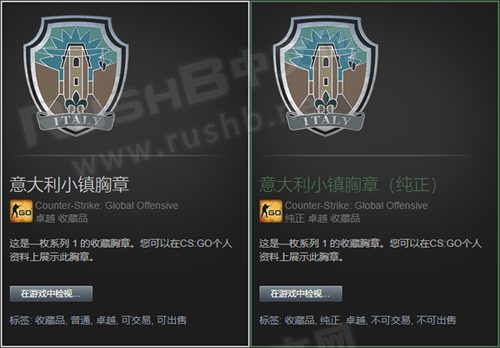
系列 1 收藏胸章胶囊包含的胸章（图片）：点击查看
系列 2 收藏胸章胶囊包含的胸章（图片）：点击查看
系列 3 收藏胸章胶囊包含的胸章（图片）：点击查看
普通版获得方法/条件：
胶囊可直接在游戏内购买；徽章可在Steam社区市场或第三方平台购买。
实体/纯正获得方法/条件：
实体胶囊可在Major现场、V社官方网店、国服军需商店购买到，但注意不一定有货。
V社官方网店：https://www.forfansbyfans.com/
完美世界CSGO国服军需商店：https://shop.csgo.com.cn/
《半衰期：爱莉克斯》收藏胸章胶囊是为了庆祝半衰期：爱莉克斯游戏上市而推出的联动商品，其中的爱莉克斯胸章也有纯正版本，不过条件和系列胸章不同，而是通过在3月24日前拥有Valve Index VR硬件的玩家自动获得，具体请看这里。
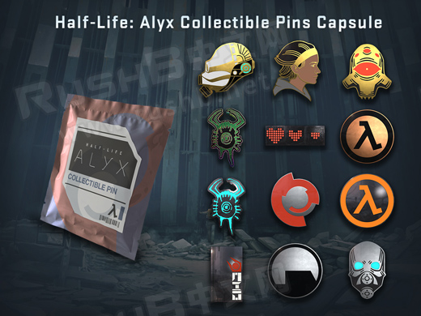《半衰期：爱莉克斯》收藏胸章胶囊及其徽章
普通版获得方法/条件：
胶囊可直接在游戏内购买；徽章可在Steam社区市场或第三方平台购买。
纯正爱莉克斯胸章获得方法/条件：
只有在3月24日前拥有Valve Index VR硬件的玩家才能获得，也就是说现在已经无法再获得。
服役勋章
服役勋章是2015年5月的更新中和个人资料军衔（等级）一起加入游戏中，玩家在官方服务器打游戏升级到40级即可领取。官方说明为：在20XX年因杰出服役和成就所赢得的奖赏。
每一年的服役勋章样式都不一样，玩家只能领取当年的勋章。另外后，可以继续升级到40级，获得下一阶段不同颜色的服役勋章。
2015年至2020年不同颜色的服役勋章和具体的获得方法请看这里。
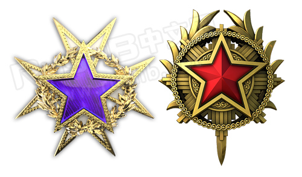左：2015年服役勋章2转 右：2020年服役勋章6转
获得方法/条件：
玩家只要在CSGO官方服务器打任意模式即可，比如竞技模式、休闲模式等等。每局游戏结束后会结算经验（经验多少取决于游戏得分以及周常奖励等），个人资料军衔每当获得5000点经验即可升一级，当玩家升到40级（全球上将）后，即可领取服役勋章。每年的服役勋章提供多个颜色等级（不同颜色勋章图片见下方），玩家领取后等级重置，然后可以继续升级到40级再领取下一等级颜色的勋章。
地图币
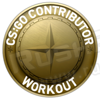健身中心地图币
地图币是奖励给CSGO创意工坊地图创作者的荣誉奖牌，只要你能设计制作出优秀的CSGO地图，并被V社采纳进官方地图池，那么就能获得这枚奖牌。目前，V社已经奖励给不同作者共46枚地图币。
不同地图币外观相同，只是图案下方地图名不同。另外地图币是原型类别，名称后面会带有（原型）字眼，并且颜色是浅绿色。
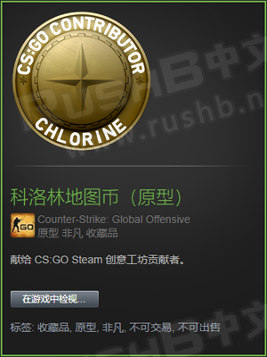
获得方法/条件：
成为CSGO地图创作者（需具备多方面姿势），制作出优秀CSGO地图并上传创意工坊，然后被V社采纳。
Major纪念奖牌
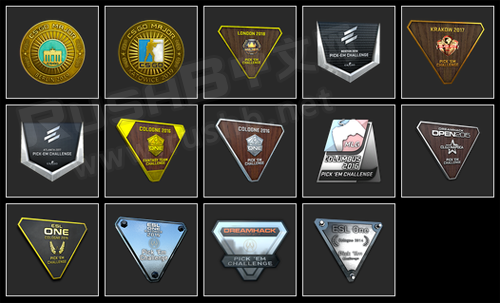本站站长至今为止参与获得的Major纪念奖牌
从2014年科隆Major开始，为了出售更多的贴纸，V社推出了Major纪念奖牌。
在14年至18年举办的Major，纪念奖牌获得方法是购买战队贴纸参与战队预测挑战，积累一定得积分便可获得铜、银、金牌。一般而言，想要得到金牌，就需要买多张战队贴纸。
到了19年，玩家不用再买贴纸，取而代之的是和大行动一样的通行证，激活后便可获得铜牌。除了参与预测，玩家还需要完成观赛、匹配任务，完成一定数量的任务便可将纪念牌升级为银、金、钻石，还能得到纪念包。
除了预测纪念奖牌，V社还在15年克卢日-纳波卡、16年哥伦布和科隆推出梦幻战队纪念奖牌，玩家需要购买签名贴纸参与，然而获得奖牌的条件是全球参与玩家中排名的前30％/15％/5％，可能是太坑爹，后续就不推出了。
更多Major纪念奖牌请看这里：
获得方法/条件：
14年至18年的Major纪念奖牌已经无法再获得，而19年以后的可以通过购买观战通行证激活获得铜牌，但是无法升级成银、金、钻石。
Major参赛奖牌
和纪念奖牌不同，Major参赛奖牌是颁发给参加Major比赛有实力的队伍选手。
在每届Major大赛结束后，V社会授予8强队伍选手纪念奖牌，包括冠军、决赛选手、半决赛选手以及1/4决赛选手。 前几届Major奖牌有不同的设计，不过在2015年克卢日后，V社患上懒癌，后面奖牌统一成金色/银色奖杯，毫无新意。
更多Major参赛奖牌请看这里：
获得方法/条件：
成为有实力的职业选手，在Major大赛上至少进入8强便可获得。